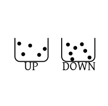

A random experiment is an activity whose outcome we cannot
predict. The set of all outcomes is called its sample space. Each
element of this set is called a sample point.
By the term event we understand a subset of the sample
space.
EXAMPLE (): A coin toss is a random experiment. Its sample space is $\{head,tail\}.$ There are four
different events possible here:
$\phi, \{head\},\{tail\},\{head,tail\}.$
///
EXAMPLE (): Rolling a die is another random experiment. The sample space here is $\{1,2,3,4,5,6\}.$
One possible event is the set of all even numbers, $\{2,4,6\}.$ ///
I give you a coin to toss. Before tossing, you carefully inspect
it. You find no difference at all between the two sides (except
for the pictures on them). So you infer that both head and tail
are equally likely (i.e., you are equally ignorant about
both sides). It is common to express this situation as "50-50"
chance, or $50\%$ chance of a head (or a tail), or probability of a head (or a tail) is $\frac 12.$
The main idea is that the chance of a head equals the chance of a
tail. We like to express this by first imagining a totality and
then halving it. This totality may be taken as 100 or 100% or 1 or any other positive number.
In probability theory we take the total as $1.$ This choice
is justified by statistical regularity, as the following example
shows.
EXAMPLE ():
Consider rolling a fair die. Let $A$ be the event that we
get a prime number, i.e., $A=\{2,3,5\}.$ Intuitively, the
probability of $A$ should be $\frac 12.$ We shall use R to
perform 5000 trials of this random experiment and check the running proportion of
cases that the event $A$ happens.
x = sample(6,5000,rep=T)
A = x %in% c(2,3,5)
plot(cumsum(A)/(1:5000), ty='l')
Notice that the proportions indeed tend towards $\frac 12.$
Similarly, we can get an idea of the probability of $B=\{1,3,4,5\}$ using
the following R code.
x = sample(6,5000,rep=T)
B = x %in% c(1,3,4,5)
mean(B)
///
With each event we assign a probability
which is a number from $[0,1].$ In practice it is difficult
(impossible?) to get a biased coin (i.e., a coin which is more likely
to show one side than the other). It is very easy to simulate
such a coin though:
x = sample(c('h', 't'), 1000, prob=c(0.7,0.3), rep=T)
sum(x=='h')
sum(x=='t')
The prob=c(0.7,0.3) specifies the probabilities.
If the sample space is countable (finite/infinite), then
generally $\ev$ is just the power set of $\Omega.$
If $\Omega$ is uncountable, then there may be some "bad"
subsets for which probability cannot be defined! These are
not called events, and so are not considered as members of $\ev.$ In this case
$\ev$ is a strict subset of the power set of $\Omega.$ Fortunately,
we shall not come across such "bad" subsets any time soon.
Let $\ev$ be the set of all events in a sample space. For
example, if $\Omega = \{head, tail\}$ then $\ev$
is $\big\{\phi,\{head\},\{tail\},\{head,tail\} \big\}.$
Then a probability is a function $P:\ev\rightarrow[0,1].$
Of course, not all such functions can be a probability. A function needs to satisfy certain
common sense conditions to be called a probability function.
EXAMPLE ():
A report says that the health condition in a country is so bad, that the chance of a newborn baby surviving for at least
1 year is only 50%. However, the chance that he survives for at least 5 years is 90%. Does it sound odd?
SOLUTION:
Yes. Any baby surviving for at least 5 years has of course survived the first year as well. So how can the latter chance
be larger?
///
This example gives one common sense condition that a probability function must satisfy: if $A\subseteq B$ then we should
have $P(A)\leq P(B).$
Of course, there are many many such common sense conditions and it is difficult to come up with a complete list.
A Russian mathematician named
Kolmogorov reduced this list to only 3 conditions, called the probability axioms.
A collection of sets is called disjoint if the intersection of any two sets from the collection is
empty. They are also called
mutually exclusive
You'll often see this sentence:
"$(\Omega,\ev,P)$ is a
probability space".
This is a shorthand for:
$\Omega$
is a nonempty set (sample space),
$\ev$ is the collection
of all events,
$P:\ev\rightarrow{\mathbb R}$ is a probability (i.e., a
function satisfying the three probability axioms).
Notice the last axiom. Here the sum may involve infinitely many
terms. Such a sum is called an infinite series. You'll learn
about them in details in your analysis course. But for now you
may quickly read this
crash course on infinite series.
It is a remarkable fact that whatever other common sense condition one has been able to think of so far
actually follows as a consequence of these! Also, you cannot drop
any of these requirements, in the sense that no two of these
imply the other. Can you show this?
It is an interesting exercise to derive various common sense
conditions from these axioms. Here is one.
EXAMPLE ():
If $A\subseteq B$ then show that $P(A)\leq P(B).$
SOLUTION:
Split $B$ as $B=A\cup (A^c\cap B).$
The two events in RHS are
disjoint. So by Axiom 3 we have
$$
P(B) = P(A) + P(A^c\cap B).
$$
The second probability in the RHS is $\geq 0$ (by Axiom
1). So done.
///
Try your hand at these:
EXERCISE:
Show $P(A^c) = 1-P(A).$
EXERCISE: Show $P(\phi)=0.$
EXERCISE: If $A_1\subseteq A_2\subseteq A_3,$ then show that $P(A_1\cup A_1\cup A_3) = P(A_1)+P(A_2\cap A_1^c)+P(A_3\cap A_2^c).$
EXERCISE:
Show $P(A\cup B) = P(A)+P(B)-P(A\cap B).$
Next we shall prove some common sense properties that will require more effort.
Take any $i < j.$ Then $B_i\subseteq A_i\subseteq A_j.$ But $B_j\subseteq A_i^c.$ So $B_i\cap B_j=\phi.$
Also, for $n\in{\mathbb N},$ we have $A_n = B_1\cup\cdots\cup B_n.$
So $A = B_1\cup B_2\cup\cdots.$(Why?)
If $x\in A$ then $x\in A_n$ for some $n\in{\mathbb N}.$ Let $n_0$ be the least $n\in{\mathbb N}$ for which
$x\in A_{n_0}.$ If $n_0=1,$ then $x\in A_1 = B_1.$ If $n_0>1,$ then $x\in A_{n_0}\setminus A_{n_0-1} = B_{n_0}.$
Hence $A\subseteq \cup B_n.$
Conversely, let $y\in \cup_n B_n.$ Then $y\in A_n\subseteq A.$
So $\cup B_n \subseteq A.$
Combining, $\cup B_n = A.$
If $A_n\searrow A$, then $A_n^c\nearrow A^c.$
Hence, by what we have proved, $P(A_n^c)\rightarrow P(A^c),$
or $1-P(A_n)\rightarrow 1-P(A),$ or $P(A_n)\rightarrow P(A),$ as required.
Just now we have mentioned the result $P(A\cup B) = P(A)+P(B)-P(A\cap B).$
We can think of this like
$P(A)+P(B)$ overestimates $P(A\cup B)$ because the $P(A\cap B)$ part is included
twice. So we need to exclude it once.
This idea of inclusion and exclusion works for any finite number of events.
Proof:
The notation is a bit complicated. Let's understand it first with the $n=3$ case.
Here the first term of the outer sum consists of the sum of all $A_\alpha$ where $\alpha\in T$
and $|\alpha|=1$ (i.e., all singleton subsets of $\{1,2,3\}$).
This sum is simply
$$P(A_1)+P(A_2)+P(A_3).$$
Similarly, the next term consists of
all $A_\alpha,$ where $\alpha$ is a doubleton subset of $\{1,2,3\}.$ Remember that
$A_{\{1,2\}} = A_1\cap A_2$ and so on. So the second term (for $k=2$) becomes
$$-[P(A_1\cap A_2)+P(A_2\cap A_3)+P(A_1\cap A_3)].$$
The third term (for $k=3$) similarly is
$P(A_1\cap A_2\cap A_3).$ So the entire sum looks like
$$P(A_1\cup A_2\cup A_3) = [P(A_1)+P(A_2)+P(A_3)]-[P(A_1\cap A_2)+P(A_2\cap A_3)+P(A_1\cap A_3)]+P(A_1\cap A_2\cap A_3).$$
The Venn diagram shows why this formula is correct. But a Venn diagram cannot be
considered as a proof, as it shows only one possible case. However, a Venn diagram does indicate
how to construct a general proof.
Note that $A_1\cup A_2\cup A_3$ is made of certain disjoint
events:
Cells
We have coloured these using blue, green and red. Blue cells
consist of points belonging to exactly one $A_i.$ For
example, $B_1$ is the set of points that belong only
to $A_1.$ The green
cells consist of points belonging to exactly two $A_i$'s,
and so on. So
$$A_1 = B_1\cup B_{12}\cup B_{13} \cup B_{123},$$
and similarly for $A_2,$ and $A_3.$ Note the pattern:
all the $B's$ with $1$ somewhere in the subscript has
occurred in the RHS. Since the events in the RHS are
disjoint, so we have
$$P(A_1) = P(B_1)+P(B_{12})+P(B_{13})+P(B_{123}).$$
Now, the first stage (inclusion) is
$$\begin{eqnarray*}
P(A_1)+P(A_2)+P(A_3)
& = & [P(B_1)+P(B_{12})+P(B_{13})+P(B_{123})]\\
& & +[P(B_2)+P(B_{12})+P(B_{23})+P(B_{123})]\\
& & +[P(B_3)+P(B_{13})+P(B_{23})+P(B_{123})]
\end{eqnarray*}$$
Note that here each $B$ with a single subscript occurs once,
each $B$ with two subscripts occur twice, and so on. This
is of course natural, since for example, $B_{12}$ occurs once as
part of $A_1$ and then again as part of $A_2.$
Next, we have
$$A_{12} = B_{12}\cup B_{123}.$$
Here all the $B$'s with $12$ in the subscript occur in
the RHS. Again, since the $B$'s are all disjoint,
$$
P(A_{12}) = P(B_{12})+P(B_{123}).
$$
Similarly for $A_{23}$ and $A_{13}.$ Using these,
the second stage (exclusion) is
$$\begin{eqnarray*}
P(A_{12})+P(A_{23})+P(A_{13})
& = & [P(B_{12})+P(B_{123})]\\
& & +[P(B_{23})+P(B_{123})]\\
& & +[P(B_{13})+P(B_{123})]
\end{eqnarray*}$$
Note that no $B$ with a single subscript occurs at
all. The $B$'s with two subscripts occur once each, while
the $B$ with three subscripts occur thrice. Do you see the
pattern? Each $B$ is like $B_\beta,$ where $\beta$
is a nonempty subset of $\{1,2,3\}.$ Similarly, each $A$ is
like $A_\alpha,$ where $\alpha $ is also a nonempty
subset of $\{1,2,3\}.$ Now $B_\beta$ occurs as a part
of $A_\alpha$ if and only if $\alpha\subseteq \beta.$
So the number of times we see $B_{123}$ in the RHS is same
as the number of subsets of size 2 of $\{1,2,3\},$ which
is $\binom{3}{2}=3.$ The same technique will also explain
why $B_{23},$ for example, occurs only once: the number of
subsets of size 2 of $\{2,3\}$ is $\binom{2}{2}=1.$
In fact, the same approach also explains the absence
of $B$'s with single indices. Each single index $B$
occurs $\binom{1}{2}=0$ times!
The third stage (inclusion) is similar, though
simpler. Here $A_{123} = B_{123},$ and so $P(A_{123}) =
P(B_{123}).$ Our basic pattern holds here also: The
3-index $B$ occurs $\binom33=1$
time. The $2$-index $B$'s occur $\binom23=0$ time,
and the 1-index $B$'s occur $\binom13=0$ time.
The following table gives a summary:
No. of indices
of $B$
Considered how many times in
Total
Stage 1 (incl)
Stage 2 (excl)
Stage 3 (incl)
1
$\binom11$
$\binom12$
$\binom13$
1-0+0=1
2
$\binom21$
$\binom22$
$\binom23$
2-1+0=1
3
$\binom31$
$\binom32$
$\binom33$
3-3+1=1
Now we head for the general case for any given $n.$
For any $\alpha\in T$ define
$B_\alpha=$ the set of all those points that belong to $A_i$ iff $i\in \alpha.$
Clearly, by definition, $B_\alpha$'s are all disjoint and
$$A_1\cup\cdots\cup A_n = \cup_{\alpha\in T} B_\alpha.$$
Now observe that for any $\alpha \in T$
$$A_\alpha = \cup_{\beta\supseteq\alpha} B_\beta.$$
So
$$P(A_\alpha) = \sum_{\beta\supseteq\alpha} P(B_\beta).$$
So the number of times a $k$-index $B$ is considered in the $r$-th
stage is $\binom{k}{r}.$
(Click here for more explanation.)
In the $r$-th stage we are considering the sum
of $P(A_\alpha)$ for all $\alpha$ of size $r.$
Fix any $\beta.$
Then $P(B_\beta)$ occurs only for those $P(A_\alpha)$'s
where $\alpha\subseteq\beta.$
Thus, $P(B_\beta)$ occurs as many times as there are subsets
of $\beta$ of size $k.$
If $|\beta|=k,$ then this number is $\binom{k}{r}.$
More precisely,
$$
\sum_{|\alpha|=r} P(A_\alpha) = \sum_{k=1}^r \binom{k}{r}
\sum_{|\beta|=k} P(B_\beta).
$$
Hence total number of inclusion of a $k$-index $B$ is
$$
\binom{k}{1}-\binom{k}{2}+-\cdots+(-1)^{n+1} \binom{k}{n} = 1-(1-1)^k=1,
$$
using binomial theorem.
Hence every $B$ is included exactly once in the RHS. Thus,
$$
P(\cup_{\alpha\in T}B_\alpha) = RHS,
$$
as required.
[QED]
Notice that the proof has used only the third axiom of probability.
So if we have any function $P(\cdot)$ that satisfies the third axiom, the theorem is valid for that
function as well. Examples of such functions include length, area, volume, mass, number of elements (for
finite sets). In short, it is
true for any measure of size.
Indeed, all functions that satisfy axiom three are called (signed) measures, and
meaure theory is the branch of mathematics that deals with them.
If the sample space $S$ is countable (finite/infinite), say
$$
S = \{x_1,x_2,...\},
$$
then take any sequence $p_1,p_2,...$ of nonnegative numbers
ading up to $1.$ Defining $P(\{x_i\})=p_i$ completely
specifies a probability. Conversely, any probability can be
constructed like this.
The simplest special case is when the sample space $\Omega$ is finite
(say $|\Omega|=n$) and we take $p_1=\cdots=p_n=\frac 1n.$
In this case, for any $A\subseteq \Omega$ we have $P(A) =|A|/|\Omega|.$
Many interesting problems fall in this category. They are
basically problems of combinatorics. One type of problem is
occupancy problems, where we have some boxes and some
balls are distributed over them following various
conditions.
EXAMPLE ():
There are three distinct boxes and 10 distinct balls. The balls are dropped randomly among the boxes so that all possible
configurations are equally likely. (No ball is outside a box.) What is the probability that the first box is empty?
SOLUTION:
Each of the 10 balls has 3 possible destinations, irreespective of the other balls. So the total
number of configurations is $3^{10}.$ So $|\Omega|=3^{10}.$
Let $A$ be the event that the first ball remains empty. Then $A$ occurs if and only if all the balls land in
the other 2 boxes. So $|A|=2^{10}.$
Since all outocmes are equally likely hence
$$P(A)= \frac{|A|}{|\Omega|} = \left(\frac 23\right)^{10}.$$
///
EXAMPLE ():
Same problem as above, except that the balls are now identical. The boxes are still distinct.
What is the answer now?
SOLUTION:
By the bar-star argument $|\Omega| = \binom{12}{2}=66.$
Similarly, $|A| = \binom{11}{1} = 11.$
So the answer is $\frac 16.$
///
Certain real-life scenarios may be modelled like
this. Here are a few examples from physics (no need to cram these
terms for the exams!).
EXAMPLE ():
There are $r$ (identical/distinct) particles. Each particle may be in
one of $n$ distinct states. We can think of the particles as
balls and the states as boxes. For example, if the states are UP
and DOWN, and there are $r=12$ identical particles, among which 5 are
in UP state and 7 in DOWN, we can visualise this as:

If there are $r=3$ distinct particles and the same two
states, then the picture could be like:
Physicists assume various types of probabilities on
these.
Maxwell-Boltzmann distribution: The balls are
distinct. Then there are $n^r$ many possible configurations (each
of the $r$ balls has $n$ possible destinations).
All these $n^r$ configurations are assumed equally likely.
No real life particle shows this behaviour.
Bose-Einstein distribution: The balls are
identical. So, by the bar-star argument, we know that there
are ${n+r-1\choose n-1}$ configurations possible. These are
assumed equally likely.
Fermi-Dirac distribution: Here $n\geq r$ and no
box can hold more than one ball. Balls are
identical. So ${n\choose r}$ distinct configurations are
possible (since a configuration is determined completely by which
of the boxes have one ball in it). All these
configurations are assumed equally likely.
Often we come across events that easily described in words, but
whose probabilities are rather hard to compute. Computer
simulation comes handy in such cases. Computer simulations help
in detecting theoretical mistakes too.
EXAMPLE ():
A deck of 10 cards labelled 1,...,10 is shuffled thoroughly. We shall
say that the $i$-th card is at home, if it is in
the $i$-th positon after the shuffle. Write an R code to
estimate the probability that exactly 3 cards are at home.
SOLUTION:
event = numeric(5000)
for(k in 1:5000) {
x = sample(10,10)
at.home = sum(x==(1:10))
event[k] = (sum(at.home)==3)
}
mean(event)
$(A\cap B)\cup (B\cap C) \cup (C\cap A)\subseteq A\cup B\cup C.$
Take $S = \{0,1,2\}.$ Obtain
functions $P_i:S\rightarrow{\mathbb R}$ for $i=1,2,3$ such
that $P_i$ violates axiom $i$, but satisfies the other
two.
If $P(A)=0.9$ and $P(B)=0.8,$ show that $P(A\cap
B)\geq 0.7.$ In general, show that $P(A\cap B)\geq
P(A)+P(B)-1.$ This is known as Bonferroni's inequality.
Show that
$$
P\left( \cup_1^n A_i\right) \leq \sum_1^n P(A_i).
$$
An SRSWOR of size 2 is drawn from $\{1,2,3,4,5\}.$ What
is the probability that (a) the first selected digit is odd?
(b) the second selected digit is odd? (c) both are odd? (d) at
least one is odd?
A fair coin is tossed 6 times. What is the probability that
the first head occurs (a) at the third toss? (b) not before the
third toss?
10 distinct balls are dropped randomly in 3 distinct
boxes. What is the probability that none of the boxes remain empty?
Two fair dice are tossed, what is the probability that the
sum is $i$ for $i=2,3,...,12?$
Two cards are randomly selected from a deck of 52 playing
cards. What is the probability that they are of the same
denomination?
10 light bulbs are shining in a row. If a lightning strikes, then
some (or all or none) of the light bulbs may go out (all possibilities
being equally likely). What is the chance that after a
lightning at least two consecutive light bulbs are still shining.
We have 4 letters and their respective addressed
envelopes. If the letters are placed randomly in the envelopes,
then find the probability that exactly $k$ letters are in their correct
envelopes for $k=1,2,3,4.$
The numbers $1,2,...,n$ are arranged in random
order. Find the probability that the digits $1,2,3$ appear
as neighbours in this order.
$A$ throws six dice and wins if scores at least one
ace. $B$ throws twelve dice and wins if he scores at least
two aces. Who has the greater probability to win?
Find the probability that among three random digits there
appear exactly 1,2 or 3 different digits. Also do the same for
four random digits.
Find the probability $p_r$ that in a sample of $r$
random digits no two are equal.
If $n$ balls are placed at random among $n$ cells,
find the probability that exactly one cell remains empty.
A man is given $n$ keys of which only one fits his
door. He tries them successively using SRSWOR until he finds the
right key. Show that the probability that he will try $k$
keys is $\frac 1n$ for $k=1,...,n.$
Suppose that each of $n$ sticks is broken into one long
and one short part. The resulting $2n$ pieces are combined
pairwise in a random fashion. What is the probability that the
original pairings are restored? What is the probability that each
long piece gets a short partner?
A box contains 90 good and 10 defective screws. If 10 screws
are selected at random (SRSWOR), then find the probability that
none of these are defective.
From the set $\{a,b,c,d,e\}$ we draw an SRSWR of size
25. What is the probability that the sample will have 5
occurrences of each of the letters?
If $n$ men (including $A$ and $B$) stand in a
row in random order, what is the probability that there will be
exactly $r$ men between $A$ and $B?$
What is the probability that two throws with three dice each
will show the same configuration if (a) the dice are distinct
(b) the dice are identical?
A town has $n+1$ people: $p_1,...,p_{n+1}.$
A news is spreading as rumour in this town as follows. Initially,
only $p_1$ knows the news. He communicates the news to
one of the
remaining $n$ people randomly. This person again
communicates the news to one of the other $n$ persons (may
be $p_1$ again) randomly, and so on. Find the probability that the
rumour spreads $r$ times without returning to $p_1.$
Also, find the probability that the rumour spreads $r$ times
without being repeated to any person.
There are $n$ persons in a room. Assuming that each
person is equally likely to be born in any day of the year (1
year=365 days), find the probability that at least two persons
share the same birthday.
Let $A_1,A_2,A_3$ be threee events. Let $p_1 = \sum
P(A_i)$ and $p_2 = \sum_{i< j} P(A_i\cap A_j)$ and $p_3 = P(A_1\cap A_2\cap A_3).$
Find (in terms of $p_i$'s) the probability that exactly one of the
events $A_1,A_2,A_3$ has occurred. Generalise to $n$
events. Also find (and prove) a formula (in terms of
the $p_i$'s) for the probability that exactly $r$ of
the $n$ events has occurred.
Comments
To post an anonymous comment, click on the "Name" field. This
will bring up an option saying "I'd rather post as a guest."